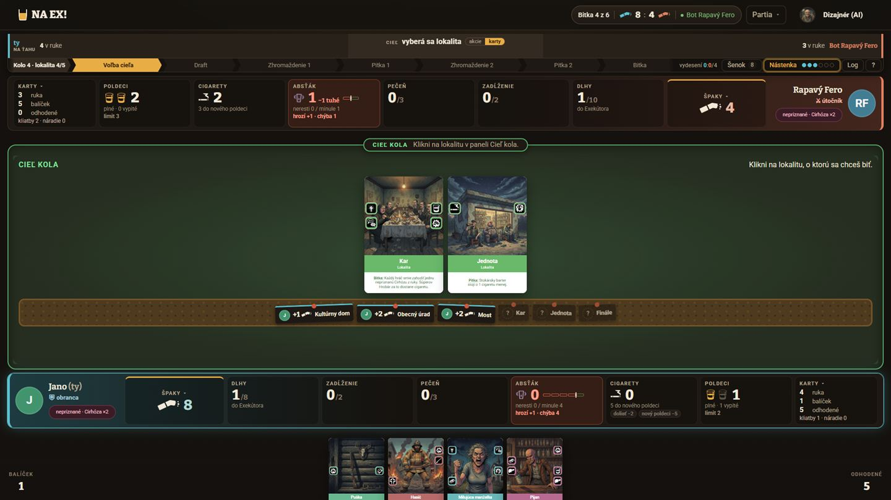
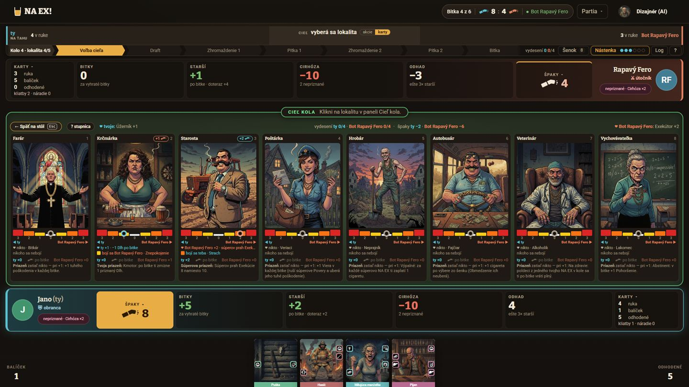
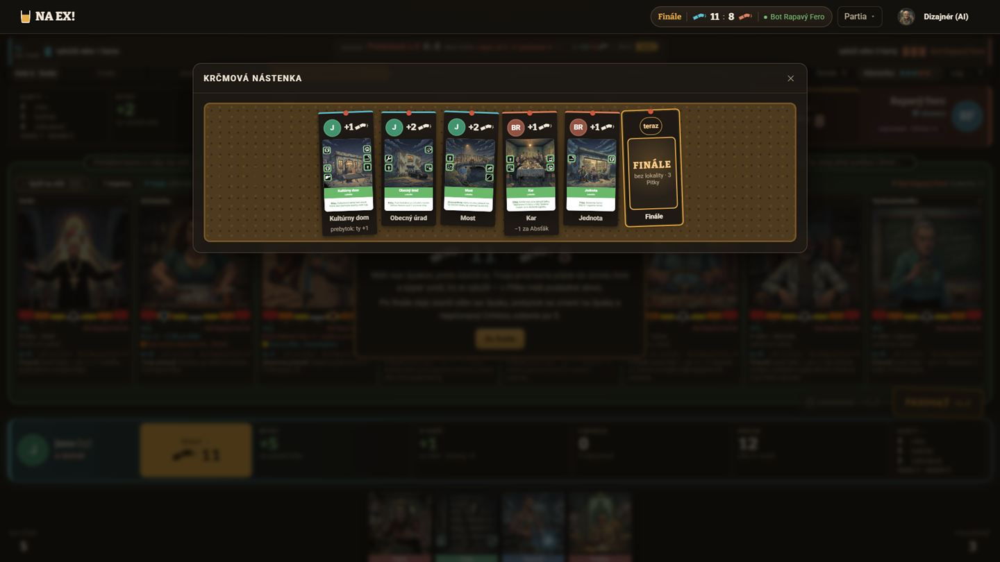
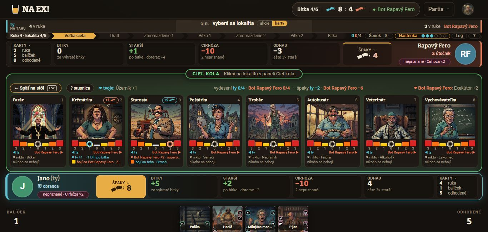
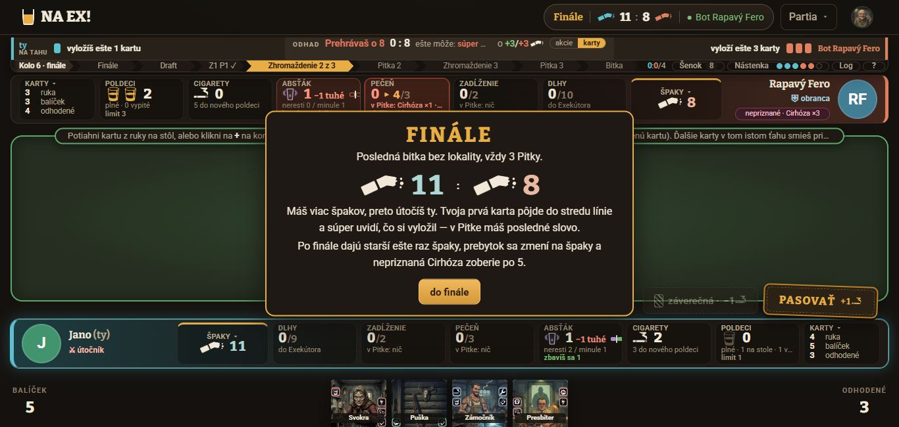

Špaky a Starší na stole
Verdikt. Krčmová nástenka už na stole je, ale schovaná za tlačidlom Nástenka v hlavičke. Ukazuje len špaky za bitky, takže súčet lístkov nesedí so skóre: v ukážkovej partii 6 z 11 a 2 z 8. Klik na Špaky dnes otvorí líniu starších a prepne oba bary na bodový bar. Tým zmiznú Poldeci, Cigarety aj Absťák a jantárová stlačená dlaždica je najhlasnejšia vec na obrazovke.
Odporúčam: klik na Špaky otvorí nástenku s účtom (variant A, Michalov nápad doplnený o starších a stav po každej bitke). Línia starších sa presunie na novú dlaždicu Starší so stupienkami (S1). Bodový bar sa zruší a jeho čísla sa presunú do päty nástenky.
1. Súčasný stav
Snímky sú z ukážky stola (/hra/ukazka-stola?lokalit=5, seed 8, Jano proti botovi Rapavý Fero), čistý origin/master b44e7f1. V ukážke hráči nemajú fotky, preto majú na snímkach iniciály. Mockupy nižšie používajú fotky, aby bolo vidno Michalovu „fotku víťaza“.





ui/stol-vacsi) sa uvoľní miesto na Starších.2. Audit
| # | Závažnosť | Problém | Dôkaz |
|---|---|---|---|
| P1 | vysoká | Nástenka nevysvetľuje skóre. Lístok ukazuje len zaBitku víťaza. Špaky od starších, ktoré sú pri v6 polovica bodov a viac, na nástenke chýbajú, takže hráč si skóre zo stola neposkladá. | nastenka-1920 (lístky 6 vs. skóre 11, 2 vs. 8); hra/Spaky.tsx:113 |
| P2 | vysoká | Dva vchody, ani jeden neodpovedá na otázku „odkiaľ mám špaky“. Špaky otvoria starších, Nástenka v hlavičke otvorí bitky. Prehľad partie leží pod nenápadným tlačidlom vpravo hore. | hra/Panely.tsx:804–829, hra/HernaPlocha.tsx:5048–5071 |
| P3 | vysoká | Strach starších nie je na stole vidno. Odkiaľ prídu špaky po ďalšej bitke, sa dá vyčítať len z tooltipu Špakov alebo po kliku. Stav, ktorý rozhoduje partiu, nemá na stole vlastné miesto. | stol-1920; tooltip Panely.tsx:815 |
| P4 | stredná | Bodový bar zmaže zdroje. Kým je otvorená línia starších, z oboch barov zmiznú Poldeci, Cigarety, Absťák aj Pečeň. Pri rozhodovaní o Pohoršení ich pritom hráč potrebuje. | spaky-klik-1920; hra/BodovyBar.tsx, Panely.tsx:606 |
| P5 | stredná | Hierarchia stlačenej dlaždice. Plná jantárová plocha (button.zdroj-body[aria-pressed]) je hlasnejšia ako tlačidlo PASOVAŤ, ktoré je skutočná akcia ťahu. | spaky-klik-1920; hra/hra.css:332 |
| P6 | stredná | Jedna dlaždica, dva časy. „Starší +1 · po bitke · doteraz +5“: veľké číslo hovorí o budúcnosti, malý text o minulosti. „Odhad −5“ bez vzorca nikto nerozlúšti. | spaky-klik-1366; BodovyBar.tsx:32–56 |
| P7 | stredná | Úroveň zóny nesmie niesť len farba. Žltá a oranžová majú medzi sebou 1,83 : 1, oranžová a červená 1,72 : 1. Na malej dlaždici ich od seba nerozoznáš. Línia starších to rieši výškou schodíka a návrhy dlaždice musia tiež. | výpočet WCAG z FARBY_STUPNICE (tvorba/src/geometria.ts:120) |
| P8 | nízka | Odznak „⇄ n“ sedí na nesprávnej dlaždici. Počíta pohnutých starších, no visí na Špakoch. | stol-1920; Panely.tsx:822 |
| P9 | nízka | Poznámka na nástenke má nízky kontrast. --slaby-text na korku (#4e3a1e) má 3,41 : 1, pod hranicou AA pre malý text. --tlmeny má 4,58 : 1, ten je v poriadku. | hra/spaky.css (.nastenka-pozn) |
| P10 | nízka | 1366×650: línia starších po kliku oreže priazne pod riadkom strachu. Keď sa na ňu pôjde cez novú dlaždicu Starší, uvoľní sa výška, ktorú dnes zaberá bodový bar. | spaky-klik-1366 |
3. Klik na Špaky — tri varianty
Všetky tri varianty majú rovnaké dáta: ukážková partia (seed 8, 5 lokalít) pred finále, 11 : 8. Rozdelenie špakov od starších v bitkách 1–3 som dopočítal tak, aby sedeli súčty z ukážky; bitky 4–5 a finále sú presne podľa ukážky. Kliknite v mockupe na dlaždicu Špaky, svoju dole alebo súperovu hore. Zatvára sa klávesom Esc, krížikom alebo opätovným klikom.
A · Krčmová nástenka s účtom (Michalov nápad, identitu posilňuje)
Nadväzuje na existujúcu nástenku. Lístky pribudnú zľava doprava v poradí, v akom sa lokality hrali. Na lístku je fotka víťaza, +N za bitku a karta lokality. Pod pripináčikom je nová účtenka: čo v tej bitke dali starší obom hráčom, čo vzal Exekútor, prebytok a stav po bitke (2 : 1, 5 : 2…). Hore sú dva popolníky so skóre a rozpisom, takže súčet konečne sedí. Finále je lístok „teraz“ s tým, čo ešte môže padnúť. Za ním je bledý lístok Koniec s nepriznanou Cirhózou. Päta preberá to podstatné z dnešného bodového baru: „keby partia skončila teraz“ a „starší ešte 1ד.
VrstvaPanel ako Šenok a Nástenka). Stôl pod ňou stmavne.Nastenka a VrstvaPanel už existujú, pribudne účtenka a hlavička. Tlačidlo Nástenka v hlavičke otvorí to isté.Rieši P1, P2, P4, P5. Dotknuté súbory: hra/Spaky.tsx (účtenka, popolníky, lístok Koniec), hra/spaky.css, hra/Panely.tsx (onClick Špakov), hra/HernaPlocha.tsx (vrstva „lokality“ = „spaky“). BodovyBar.tsx sa zruší.
Dnes: rovnaká doska, no bez starších a bez stavu, takže lístky nedajú skóre.
B · Účet z krčmy (bloček pri dlaždici)
Malý papierový bloček vyskočí priamo nad dlaždicou ako účet od krčmárky. Riadky sú bitky, stĺpce za bitku · starší · iné · stav, tabuľkové číslice a čiara pod súčtom. Pod čiarou je „ešte príde“ kurzívou (finále, starší po finále, Cirhóza na konci) a „odhad“ pomenovaný slovami. Stôl ostane celý viditeľný a hráč môže počas Zhromaždenia pozerať aj na líniu. Prepínač ty / Fero je priamo v bločku.
nastenka + spakyTeraz) a ukotvenie popoveru na okraji obrazovky. Na 1366×650 sa vojde nad spodný bar (≈ 260 px).Rieši P1, P4, P6, čiastočne P2: nástenka ostáva v hlavičke a účet je druhý pohľad na tie isté čísla. Najrýchlejšie odpovedá na otázku „prečo mám 11“. Fotku víťaza má len ako malý krúžok pri lokalite, takže krčmová nálada je skôr v papieri bločku než v nástenke.
Dnes: klik prepne celý stôl aj oba bary.
C · Pretek popolníkov (odvážnejší smer)
Plochu stola nahradí schodový graf špakov oboch hráčov po bitkách, tak ako dnes plochu nahrádza línia starších. Pod osou je fotka víťaza každej bitky. Od teraz do konca vedie prerušovaná vidlica od najhoršieho po najlepší výsledok: finále 0 až 3, starší ešte raz, Cirhóza −5 za kus. Vpravo je zoznam Čo je ešte v hre. Ako jediný variant ukazuje, či súperov náskok vydrží: Fero má 8, no po Cirhóze skončí medzi −5 a −2.
spakyTeraz, max a min finále, a čitateľnosť pri 1366×650 (výška plochy ≈ 250 px).Rieši P1, P3 (časť), P6. Riziko: „najlepší/najhorší prípad“ je odhad. Ak sa v ňom hráč pomýli, bude veriť grafu viac ako pravidlám. Vidlica preto nerátá prebytok ani pohyb markerov a hovorí to aj nahlas.
Dnes: plochu nahradí línia starších. Variant C tam dáva priebeh partie.
4. Dlaždica Starší
Dlaždica stojí v rade hneď vedľa Špakov, lebo im ich sype. Na prvý pohľad má byť vidno tri veci: koľko špakov mi dajú starší po ďalšej bitke (veľké číslo), koľko starších sa ma bojí a v akej zóne. Klik otvorí to, čo dnes otvárajú Špaky: líniu starších namiesto plochy stola (Esc späť). Rozdiel je, že bary ostanú celé a bodový bar zmizne. Odznak „⇄ n“ (pohnutí starší od bitky) sa presunie sem.
Pravidlá §10 hovoria, že priazeň a strach sú dve strany toho istého markera. Starší, ktorý sa bojí mňa, dáva súperovi priazeň. Moja priazeň je teda súperov strach a vidno ju na súperovej dlaždici Starší. Návrh to necháva tak, aby dlaždica nehovorila dve veci naraz. Pozri otázku 1.
S1 · Stupienky (odporúčam)
Osem stĺpčekov, jeden za každého staršieho v poradí línie. Výška aj farba ukazujú zónu, v ktorej sa ma starší bojí (žltá 1, oranžová 2, červená 3). Ten, kto sa ma nebojí, je nízky sivý zárez. Je to ten istý schodíkový jazyk ako stupnica v línii, takže úroveň vyčítaš aj bez farieb (P7). Veľké číslo +N so špakom je to, čo príde po ďalšej bitke, pod ním „2 sa ťa boja“. Šírka 96–200 px, na 1366 sa nič nereže.
spakyTeraz(view).starsi a zaStarsich. Nová trieda .zdroj-starsi, žiadny nový token, farby z FARBY_STUPNICE.S2 · Portréty
Namiesto stĺpčekov sú tu tváre starších, ktorí sa ma boja: krúžok 28 px s farebným rámom zóny a číslom 1/2/3 v rohu. Číslo nesie úroveň aj bez farby. Pri viac ako troch ostane „+2“. Keď sa nikto nebojí, dlaždica povie „nikto sa ťa nebojí“. Je to osobnejšie a viac krčmové, lebo vidno, že ťa sa bojí práve Starosta. Pri 1366 sa však zmestia len 2–3 tváre a v 28 px Farára od Hrobára rozoznáš skôr podľa farby pozadia než podľa tváre.
LupaStarsieho už existuje).@512 stačí), hover na lupu a pravidlá skracovania.Stavy dlaždice (S1)
Pokoj · hover · fokus z klávesnice · stlačená (línia otvorená) · posun od bitky (⇄) · dnešná stlačená Špaky pre porovnanie.
5. Dáta: čo klient má a čo by chýbalo
- Má:
view.nastenka[](BitkaNaNastenke: lokalita, víťaz, pitky,zaBitku,zoSekery,abstakZrazka,prepadlo,zaStarsich,exekutor,prebytok,spakyPo). Z toho sa poskladajú účtenky (A), bloček (B) aj schody grafu (C). Všetky zmeny špakov sa dejú v bitke, takže body po bitkách sú celý priebeh. - Má:
spakyTeraz(view):zaStarsichpo ďalšej bitke,starsi[]po staršom,vyplat,cirhozy,odhad. Z toho je dlaždica Starší, päta nástenky a vidlica v grafe. Avatary hráčov sú vHracInfo, portréty starších sú karty z dát hry. - Má: počet súperových nepriznaných Cirhóz (
nepriznaneKliatby, verejné, počíta sa z toho, čo sa ukázalo). - Chýba (len voliteľne): ktorí starší a koľko dali v konkrétnej bitke. Nástenka nesie len súčet
zaStarsich. Ak má účtenka ukázať „Starosta +1, Farár +2“, server by musel doBitkaNaNastenkepridať napr.zaStarsichRozpis: { elderId, spaky: [n, n] }[]. Je to verejná informácia, markery sú na stole. Pre návrhy A, B, C ani pre dlaždicu to nie je nutné. - Chýba pre vidlicu v C: nič na serveri. Maximum finále je
FINALE_PITKY= 3, minimum 0 (prehra alebo sekera), staršízaStarsich × vyplat. Prebytok a pohyb markerov sa nepredvídajú a graf to musí napísať.
6. Odporúčanie a poradie
- Dlaždica Starší S1 (stupienky) a presun línie starších zo Špakov na ňu. Zrušiť bodový bar a stlačený stav zmeniť z plnej výplne na okraj. Malá úloha. Hneď rieši P3, P4, P5 a P8 a uvoľní klik na Špaky. Čaká na zlúčenie Dlhov so Zadĺžením (
ui/stol-vacsi). - Klik na Špaky = variant A (nástenka s účtom). Tlačidlo Nástenka v hlavičke otvorí tú istú vrstvu, takže sú to dva vchody k jednej veci. Malá až stredná úloha, rieši P1, P2, P9. Do päty nástenky patria dva riadky z bodového baru: „keby skončila teraz“ a „starší ešte nד.
- Neskôr, podľa playtestu: z variantu C len malý schodový graf nad lístkami nástenky (výška 60 px, bez vidlice), ak hráči budú chcieť priebeh. Variant B si nechávam v zálohe pre prípad, že by vrstva cez stôl počas Zhromaždenia prekážala.
Rozhodnutie Michala: A, B alebo C pre Špaky; S1 alebo S2; či sa bodový bar ruší celý.
7. Otázky na Michala
- „Priazne starších“ na dlaždici: myslíš strach, teda kto sa ma bojí a dáva mi špaky (návrh S1/S2), alebo priazeň, teda koho efekt ♥ mám ja? Sú to dve strany jedného markera. Dlaždica vie jedno hlavné číslo a druhé ako malý riadok, nie oboje rovnako hlasno.
- Bodový bar zrušiť celý? Jeho čísla (bitky, starší doteraz, Cirhóza, odhad) by sa presunuli do nástenky. Rad dlaždíc by sa už nikdy neprepínal.
- Lístok „Koniec“ s Cirhózou na nástenke ešte pred koncom hry: ukazovať aj súperove nepriznané Cirhózy (−15)? Je to verejný počet, no na lístku to vyzerá ako verdikt.
- Má tlačidlo Nástenka v hlavičke ostať, keď ju otvoria aj Špaky? Navrhujem ostať, lebo pri voľbe cieľa sa z nástenky vyberá lokalita.